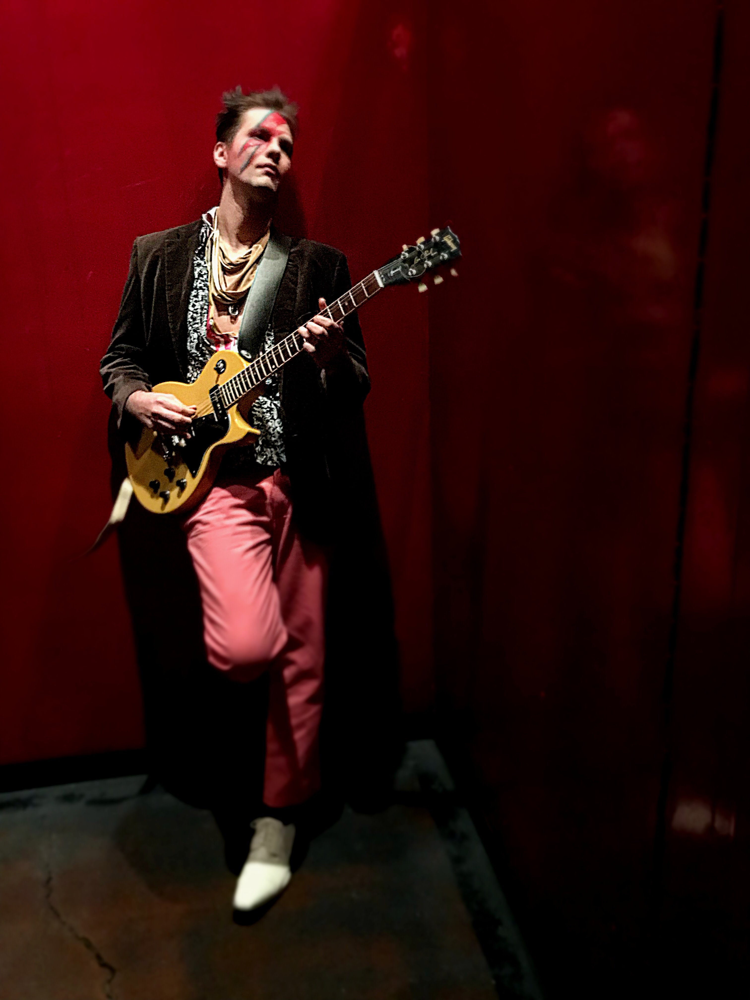

About Me

I'm an Energetic administrative and operational professional, customer service champion, and Excel guru. I have multi-field experience supporting service and production teams. I excel at delivering innovative thinking that improves net revenue for the teams I support. My passion is process streamlining! (Seriously.) My most recent projects have resulted in improved real-time labor tracking and project component consolidation. My diverse experience has led me to a career in office and team management, and has provided me the opportunities to optimize operations, satisfy clients, and provide a healthy environment for my employees.
I'm currently enrolled in the University of California's Remote Software Development Program. This program is teaching me the ability to develop front-end, back-end, and everything in between to ensure an ability to develop and maintain fully integrated software.
During the multitude of time off that I have, I like to kayak, hike, and rock climb. I'm a huge Mariners and Seahawks fan, and devour history books.
I'm a wine enthusiast, news junkie, and another one of my favorite hobbies includes spoiling my neices and nephews.